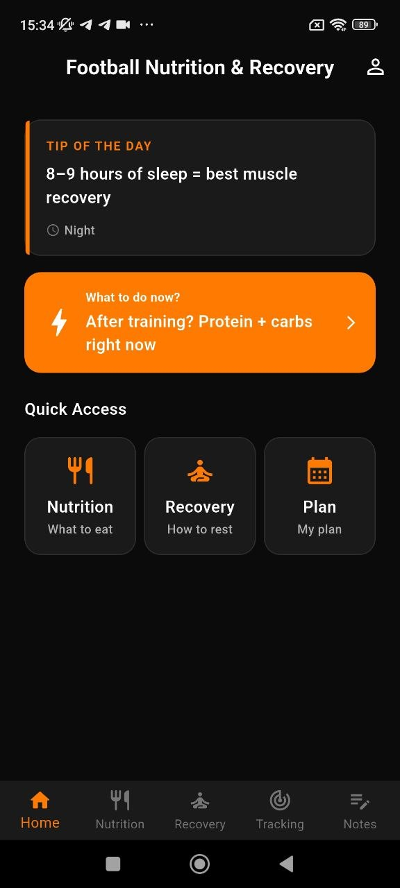
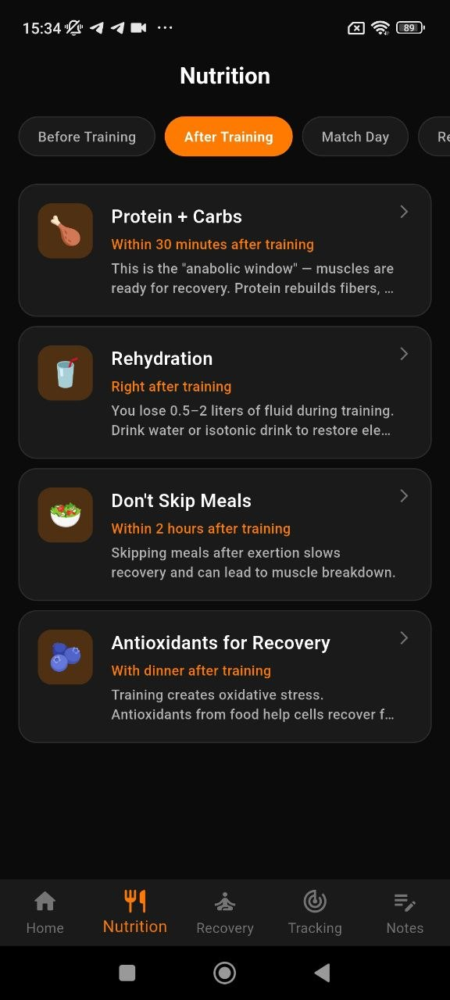
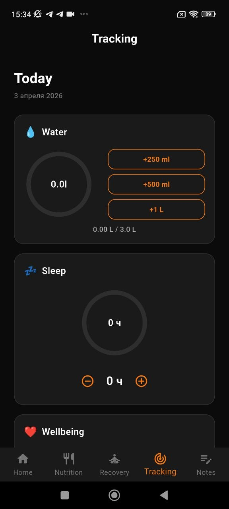
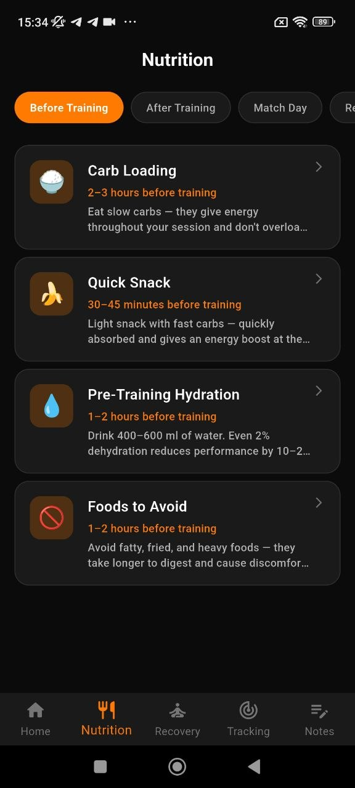

Built for football players and recovery routines
Fuel better. Recover faster. Track what matters.
Mlb Football Nutrition combines pre-training food guidance, post-training recovery support, hydration tracking, sleep awareness and quick notes in one focused mobile product for players who want clearer daily decisions around performance.
Tip of the day
8–9 hours of sleep = better muscle recovery
Tracking
Water, sleep and wellbeing in one place



Pre-training nutrition
Post-training meals
Stretching and recovery
Sleep support
Hydration tracking
Wellbeing monitoring
Quick notes
Pre-training nutrition
Post-training meals
Stretching and recovery
Sleep support
Hydration tracking
Wellbeing monitoring
Quick notes
Product features
Screenshots used as real product blocks, not just gallery filler
I used only the stronger screens and attached each one to a clear benefit: what to eat, how to recover, how to track, and how to save observations.
Home logic
Start with one clear recommendation instead of overwhelming the player
The home screen quickly answers what matters now: the daily tip, next recovery action and direct entry points into the app’s main areas.
- Fast tip-based entry into the product
- Quick access to nutrition, recovery and plan logic
- Strong dark sports UI with bright action emphasis
Nutrition
Meal timing before training, after training and match day
The app organizes food advice by context, so users do not need to guess what is better before a session or during recovery.
Recovery
Practical post-training recovery instructions in compact detail views
Instead of vague advice, the user sees action, timing, duration and effect in a structured format.
Tracking
Track water, sleep and wellbeing without leaving the app
Daily habits become easier to manage when recovery metrics are visible in one dark, simple interface.
Notes
Save quick observations after training, meals or recovery sessions
The notes area turns the app into something useful every day, not just a static content catalog.
App structure
One performance flow from food to recovery to daily consistency
This layout keeps modern landing interactions, but visually it is not a copy of the previous project. The composition is more compact, the screenshots are placed differently, and the whole page leans into a stronger athletic UI direction.
Guide what to eat based on actual training timing
The nutrition flow is strongest when it answers practical timing questions: before session, after session and match-day routines.
Before training
After training
Match day
Hydration cues

Support actual recovery, not just motivation quotes
Recovery content is useful because it translates into timing, duration, effect and action for stretching and sleep routines.
Stretching
Sleep
Muscles
Hydration
Keep daily discipline visible with a compact tracker
Water, sleep and wellbeing are easier to follow when they are shown on one focused tracking screen designed for quick updates.
Water
Sleep
Wellbeing
Habit support
It is darker, tighter and more athletic in composition
The page uses fewer screenshots, a more compact hero, denser feature framing and stronger orange highlight logic, so it does not feel like a recolor of your previous site.
Each one explains a use case
The selected screens are attached to food timing, recovery guidance, habit tracking and note capture instead of being dumped into one giant generic gallery.
Food advice, recovery logic and discipline tracking in one app
The product story becomes stronger because the app is not just a nutrition guide. It also helps players recover better and monitor the basics they usually forget.
Nutrition guidance
Recovery support
Habit tracking
Because the app is about routine and clarity. A cleaner set of selected screens makes the product feel more focused and more expensive.
It still has reveal animations, active navigation, tilt cards, modal preview, tabs, spotlight and hover interactions, but the layout stays controlled.
The strongest angle is practical timing: what to eat before and after training, how to recover, and what to track every day.
Social proof
A sharper landing built around routine, clarity and recovery
The app becomes easier to sell when the landing explains exactly how it fits into a player’s day.
★★★★★
“The app concept is easy to understand right away: eat better, recover better and keep your basic habits visible.”
★★★★★
“I like that the screenshots were not overloaded. Each screen on the landing actually explains a different function.”
★★★★★
“The dark orange style works really well for a football recovery app. It feels stronger and more premium than a generic template.”
A strong app landing should explain the player’s daily flow, not just list random screens and generic feature names.
Ready to build a better routine
Install Mlb Football Nutrition and simplify daily recovery decisions
Use one mobile app for nutrition timing, post-training recovery, hydration tracking, sleep awareness and quick notes after sessions.